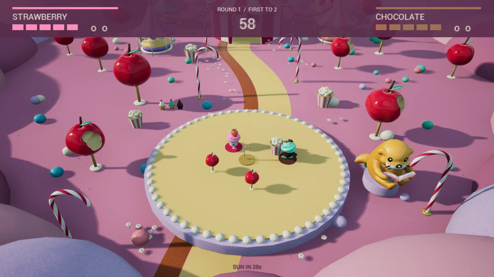
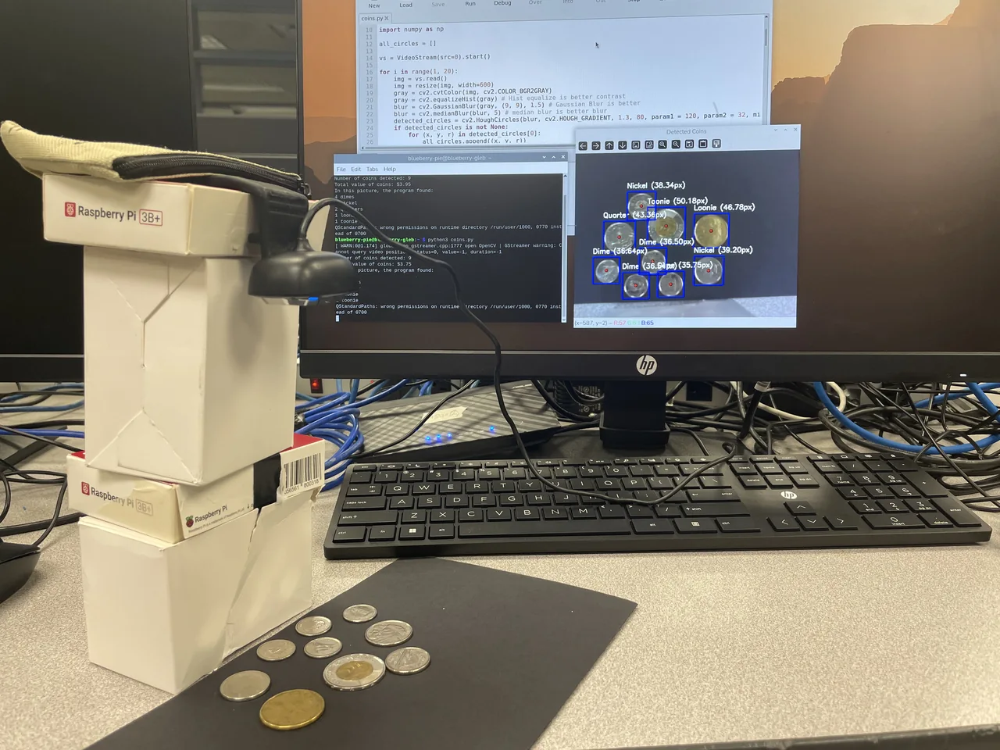

Visit Website
Visit Website
Aerochronix
250 Incident Aviation Intelligence Platform
I built a searchable library of 250 aviation investigations in React and TypeScript and used Three.js for 40 animated 2.5D flight-path reconstructions. The semantic knowledge graph uses a D3 layout to connect incidents through shared factors documented in investigation reports. I optimized rendering by showing a representative set of nodes and limiting background edges to the current view, and tested the graph with 5,000 synthetic incidents and 50,000 connections.
Tech Stack: React, TypeScript, D3.js, Three.js
 View GitHub
View GitHub
Branchseed Navigator
Hackathon Winner
Our four-person team won first place in the Battle of the Schools healthcare track with a CPU-only CTA prototype built in 24 hours. I outlined ways to detect abdominal aortic branches, set evaluation criteria, and used what I learned from medical school lectures on YouTube to manually verify two organizer-provided cases. The pipeline searches a narrow shell around the aorta and traces the first 5–10 mm of each detected branch in physical scan coordinates.
Tech Stack: Python, NumPy, SciPy, SimpleITK, Node.js
Input CTA slice from the subject001 NIfTI test case.

View GitHub
Candybal
Won Best Use of Meshy
Our four-person team built a two-player cupcake brawl in a three-hour jam. A WebSocket relay through a Cloudflare Tunnel turns iPhone tilt into Unreal Engine controls. I designed the sunlight mechanic, which melts the cupcakes’ frosting and changes when players attack or retreat.
Tech Stack: Unreal Engine 5, C++, Node.js, WebSockets, Cloudflare Tunnel
 Visit Website
Visit Website
Casentra
Corporate Collapse Simulator
I built Casentra to let players make decisions during corporate collapses and compare the outcomes with the documented record. The live collection has 18 simulations, including Enron, FTX, Silicon Valley Bank, and WorldCom. A deterministic engine replays choices against scenario rules, and Enron Interview Mode scores calculations and gives structured feedback.
Tech Stack: React, TypeScript, Vite, Netlify Functions

View GitHub
Computer Vision Coin Counter
Canadian Coin Recognition on Raspberry Pi
I spent about a month building and tuning a Raspberry Pi 3 counter that recognizes five Canadian coin denominations and totals their value. I applied Gaussian blur for noisy images, tuned Hough circle detection and colour thresholds, and averaged detections across 19 frames to make the readings more consistent.
Tech Stack: Python, OpenCV, NumPy, Raspberry Pi 3
 View GitHub
View GitHub
Piano Tiles-Inspired Hardware Game
Four-Button Timing Game
My partner and I built this timing game inspired by Piano Tiles. I wired four physical push buttons through a breadboard to the Raspberry Pi and connected a piezo buzzer. Debounced GPIO inputs drive the Tkinter game loop, and different tones signal hits and misses.
Tech Stack: Python, Tkinter, Raspberry Pi